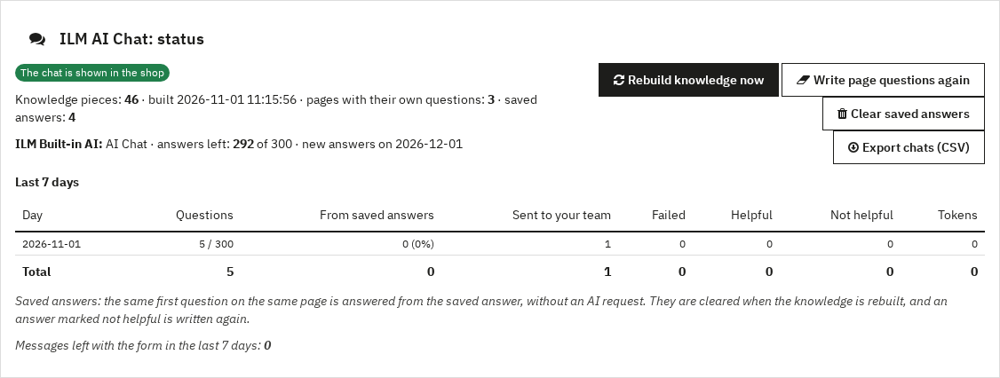

Statistics and privacy

The status panel at the top of the settings shows whether the chat is shown, the knowledge size, the built-in AI plan, and the last seven days: questions, answers from saved answers, chats sent to your team, failed answers, ratings and tokens.
- Latest chats lists the latest questions and answers, with a filter for the ones the assistant could not answer.
- Messages left in the chat lists the messages left with the form.
- Export chats (CSV) downloads the saved chats.
- Write page questions again deletes the suggested questions of every page, so they are written again.
6.1 Privacy
- Chats are kept for the days set in Keep chats for (days) (90 by default), then deleted.
- Visitors are counted by a salted hash of their IP address; the address itself is not saved with the chat.
- Questions, the page text and the knowledge found for them are sent to the AI provider you chose. With Order questions on, a signed-in customer's last five orders are sent too.
- Add a line about the chat to your privacy policy, and set it as the Privacy page so it is linked under the chat.
6.2 Uninstall
Uninstalling the module deletes its settings, chats, messages, saved answers and knowledge, and frees the built-in AI connection. To use the licence on another shop, click Remove licence from this shop in the licence bar before you uninstall.